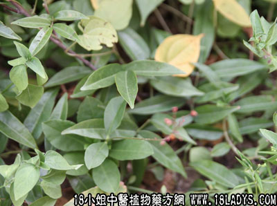

牛大力(中药材植物名:美丽崖豆藤)(植物科目:蝶形花科)

别名：甜牛大力、猪仔笠。
植物名：美丽崖豆藤。
生长环境：本品为高大木质藤本。生于山野间。
分布：广东省山区地带。
入药部分：根。
采集期：全年。
采购地点：从药材公司购入。
性味：性微凉、味甘。
功能：降气、止咳、润肺、化痰。
主治、用量和用法：1、五劳七伤：干用1～2两，猪瘦肉适量，清水煎服；2、肺燥热咳：用法同上；3、劳倦胸翳：用法同上。
验方1：（治肺热咳方）牛大力1两、红丝线5钱、红菱根5钱、清水三碗，煎成一碗服。
（方解）本方牛大力性凉，入肺经，除痰止咳；红菱根清肝肺热；红丝线凉血。合为甘凉理肺之剂，药性平稳，疗效甚佳。
（方歌）肺热痰多咳嗽生，牛大力于红菱根，红丝线同清水煎，清肺除痰建功勋。
验方2：（治劳倦胸翳咳嗽方）牛大力1两、白花苦灯笼5钱、铁色金5钱、五爪龙根5钱、清水四碗，煎成一碗服。
（方解）本方牛大力化气，铁色金散瘀，白花苦灯笼根、五爪龙行气，除痰止咳。合为化气理血之剂，治劳倦胸翳有效。
（方歌）劳倦胸翳咳不停，牛大力与灯笼呈，铁色金合五龙强，解郁除痰肺自宁。
参考资料：广东民间习惯，常把千斤拔称为大力牛。
本文解释权归中药大全，本文地址：https://www.daquan.com/post/1581.html